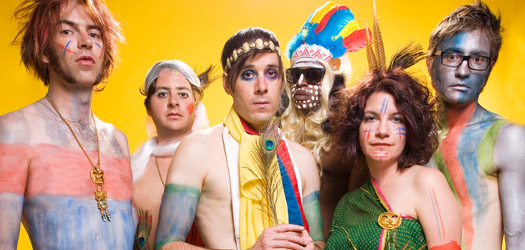

The of Montreal Experience
About the Band
Of Montreal has been creating ecclectic and energizing hits for over 20 years. The band was founded by Kevin Barnes, lead singer and frontman, in 1996. He relocated to Athens, Georgia, where he met Derek Almstead and Bryan Poole. Members have come and gone throughout the years, including influential members such as Dottie Alexander and James Husband, but Kevin Barnes is the only remaining original member. Of Montreal, the band, is more of an alter ego/stage name for Kevin Barnes; he is the genius behind the music, creating each element and then presenting the final product to band members to play. Majority of the albums produced under the name of Montreal describe the beautiful, yet tragic life of Kevin, including his encounters with love, anger, depression, and isolation. By juxtaposing deep emotional struggles with happy, energetic pop beats, of Montreal has become a prolific band in the realms of indie music.
My Personal Connection
I first heard of Montreal through a CD that my sister's soccer team made each year. Each person on the team would pick a song to add the to CD and the finished product was a conglomeration of random songs that all the girls liked. I listened to the CD in hopes of finding new music that I liked. I stumbled upon the song, "Wraith Pinned to the Mist and Other Games" off of the album Sunlandic Twins. The funky beat and "bizarre" lyrics had me hooked right away. I had never heard any other song like this one before. It was fun and exciting and, being only 13 at the time, I wasn't too analytical about the lyrics. I searched further, listening to other songs by the band, and found myself in a delightful hole. I couldn't stop listening; each track was unique and intriguing. The more I ventured deeper into of Montreal, the more I liked what I was hearing. I discovered the super experimental side of the band in albums like The Gay Parade and Coquelicot Asleep in the Poppies: A Variety of Whimsical Verse. I loved and connected with the weirdness, the dark and twisted, and the happy and gay. I was amazed at how dynamic a single band could be.
Why This Website Exists
This website was created for Writing and Digital Media, a class at Virginia Tech under the English Department. The main purpose is to serve as a central site where the of Montreal super-fan can find information about the band and their music. It is also aimed to serve as an educational site, for those whom have never heard of the band and would like to know more. By including albums, tracks, embedded music videos, and descriptions of each, I hope to share my love for of Montreal to other fans and potential fans.